Benchmark
Eleven workloads cover articulated dynamics, rigid contacts, closed loops, ray queries, and deformable objects. The tables compare RaiSim and MuJoCo on the same machine, with three runs per backend. For tuning guidance, see Performance.
Median wall-clock seconds; lower is better. The smaller range below each median is the minimum–maximum of three runs. Speedup is MuJoCo’s median divided by RaiSim’s median. All rows include scene construction and the benchmark loop; rendering is disabled.
Workload |
RaiSim (s) |
MuJoCo (s) |
Speedup |
|---|---|---|---|
Chain, 10 links |
0.302 0.293–0.302 |
1.141 1.129–1.153 |
3.78× |
Chain, 20 links |
0.575 0.573–0.586 |
3.999 3.949–4.013 |
6.96× |
ANYmal standing |
5.513 5.471–5.638 |
14.126 14.063–14.698 |
2.56× |
ANYmal falling |
0.299 0.294–0.303 |
0.780 0.779–0.784 |
2.61× |
ANYmal on heightmap |
1.198 1.185–1.227 |
5.761 5.482–5.838 |
4.81× |
Primitive speed |
3.744 3.493–3.912 |
8.832 8.829–9.354 |
2.36× |
Strandbeest |
0.179 0.179–0.215 |
0.491 0.484–0.564 |
2.74× |
Heightmap LiDAR |
0.889 0.850–0.935 |
22.869 22.539–23.141 |
25.71× |
Primitive ray scaling |
0.016 0.016–0.017 |
2.427 2.420–2.445 |
147.16× |
Deformable cloth |
0.415 0.415–0.417 |
4.947 4.888–4.960 |
11.92× |
Deformable cube stack |
0.445 0.442–0.482 |
Unstable |
— |
The eight-cube MuJoCo run reports numerical instability at 0.020 s. Its timing and speedup are omitted. Cloth and cube-stack backends use different deformable models; their parameters and comparison limits are in Workloads.

Download the recorded results and exact arguments.
Absolute timings depend on the machine, compiler, and scene. These ratios describe the
recorded development build; use your application workload to evaluate the distributed
2.9.4 package.
DOF counts generalized velocity coordinates; a floating base contributes six. A step count denotes simulation steps unless the row says queries or sensor updates.
Benchmark ID |
Run |
Scene and settings |
|---|---|---|
|
100,000 steps Δt = 1 ms |
Fixed-base chain, 10 spherical joints, 30 DOF. Spring-dampers bend each link by 90°. No collision geometry or contacts; pure articulated dynamics. |
|
100,000 steps Δt = 1 ms |
The same spring chain with 20 spherical joints and 60 DOF. |
|
1,000,000 steps Δt = 2 ms |
ANYmal: floating base and 12 revolute joints, 18 DOF. PD control holds a stance on a plane, with about four persistent foot contacts. Primitive robot collision shapes; friction 0.8. |
|
100,000 steps Δt = 2 ms |
ANYmal, 18 DOF, falling freely with no ground or contacts. |
|
200,000 steps Δt = 2 ms |
ANYmal, 18 DOF, on a 20 × 20 m fractal heightmap: 100 × 100 samples, three octaves. Tests robot–terrain contacts. |
|
100,000 steps Δt = 2 ms |
32 rigid bodies: sixteen 0.4 m boxes and sixteen spheres of radius 0.15 m, in a 4 × 4 grid at 0.6 m spacing. Spheres fall onto boxes above a ground plane; tests box–ground and sphere–box contacts. |
|
3,000 steps Δt = 1 ms |
Twelve-legged linkage, 79 DOF and 42 hinge closures / 84 pin constraints, driven by a crank at one revolution per second. RaiSim imports OpenUSD; MuJoCo loads converted MJCF with connect equalities. This row includes import, unlike the simulation-only timing in earlier versions of this page. |
|
2,000 updates Δt = 5 ms |
Spinning LiDAR on ANYmal C over a 200 × 200 m heightmap, 400 × 400 samples. Uses 512 yaw × 64 pitch samples per revolution at 10 Hz, ±16.6° pitch and 0.8–40 m range. The robot settles for 200 steps, then stays fixed while sensor time advances. Both backends check hit ratio and terrain-surface error. |
|
10,000 queries 256 warmup rays |
10,000 static primitives on a 2.5 m grid: spheres, boxes, capsules, and
cylinders. The deterministic |
|
2,000 steps Δt = 1 ms |
Unpinned 32 × 32 cloth grid: 1,024 particles, 1,922 triangles, 0.035 m spacing, dropped from 0.85 m onto a static sphere of radius 0.25 m and a plane. Six solver iterations. RaiSim uses XPBD distance compliance 10⁻⁵ with bending disabled; MuJoCo uses a 2D flex grid with edge equalities. |
|
1,200 steps Δt = 1 ms |
Eight 0.3 m cubes, stacked above a plane; six solver iterations. Explicit arguments request resolution 4 and collision radius 0.04 m; the shared spacing guard increases resolution to 5. RaiSim uses 784 surface particles with internal struts, compliance 7.5 × 10⁻⁵ and effective collision radius 0.06525 m. MuJoCo uses 1,000 volumetric flex particles, Young’s modulus 50 kPa and radius 0.005 m; that run becomes unstable. |
Deformable rows compare these implementations and settings, without matching material response or solver accuracy. In particular, the cube stack uses different particle counts, masses, and collision radii. A timing ratio alone does not measure physical fidelity.
Setting |
Recorded configuration |
|---|---|
Machine |
AMD Ryzen 9 3950X, 16 cores / 32 threads, 64 GB RAM; x86-64. |
System |
Ubuntu 26.04.1 LTS, Linux 7.0.0-38-generic. |
Run |
October 14, 2026; private development revision |
Builds |
Clang 20.1.8, C++20, |
Threading |
One thread, pinned to CPU 8 with |
Measurement |
Three calls per workload and backend. Median, minimum, and maximum of the
launcher’s wall-clock duration, including construction, warmup, validation,
and the benchmark loop. Separate query-only timings appear in the downloadable
results for |
Arguments |
Default launcher arguments for ten workloads; explicit eight-cube arguments below replace the launcher’s one-cube, 20-step quick check. Exact arguments for every row are in the downloadable JSON. |
Private comparison suite. The launcher and MuJoCo backend are maintained in the
engine repository and are not targets in raisim2Lib. The recorded commands are:
export OMP_NUM_THREADS=1 OPENBLAS_NUM_THREADS=1 MKL_NUM_THREADS=1 VECLIB_MAXIMUM_THREADS=1
taskset -c 8 ./build-benchmark/benchmark/benchmarks --backend=both --repeat 3 \
-b chain10_speed -b chain20_speed -b anymal_standing -b anymal_falling \
-b heightmap_anymal_speed -b primitive_speed -b strandbeest \
-b heightmap_lidar -b primitive_ray_scaling -b deformable_cloth \
--report --report-dir /tmp/raisim-benchmark-report
taskset -c 8 ./build-benchmark/benchmark/benchmarks --backend=both --repeat 3 \
-b deformable_cube_stack --report --report-dir /tmp/raisim-cube-stack-report \
-- --cubes=8 --resolution=4 --steps=1200 --iterations=6 --collision-radius=0.04
Measure the distributed package. Build the public timing examples from
raisim2Lib and repeat your chosen run at least three times:
cmake -S . -B build-examples -DCMAKE_BUILD_TYPE=Release -DRAISIM_EXAMPLE=ON
cmake --build build-examples --target anymal_standing_benchmark \
articulated_system_benchmark --parallel 12
OMP_NUM_THREADS=1 OPENBLAS_NUM_THREADS=1 MKL_NUM_THREADS=1 \
./build-examples/examples/anymal_standing_benchmark --steps=1000000
On Windows, build with --config Release and run
build-examples\bin\anymal_standing_benchmark.exe. These public examples time RaiSim
only, using their own scenes; they do not reproduce the private comparisons. Keep the
package version, scene, timestep, step count, and machine fixed. See Build, Test, and Benchmark
for other timing examples.
Scene illustrations
Chain, 10 links 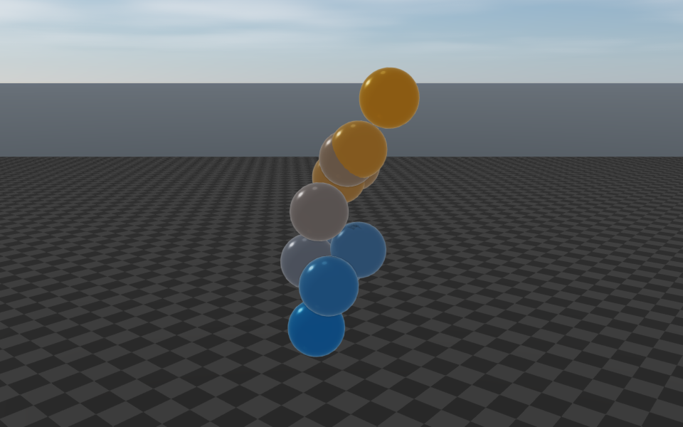 |
Chain, 20 links 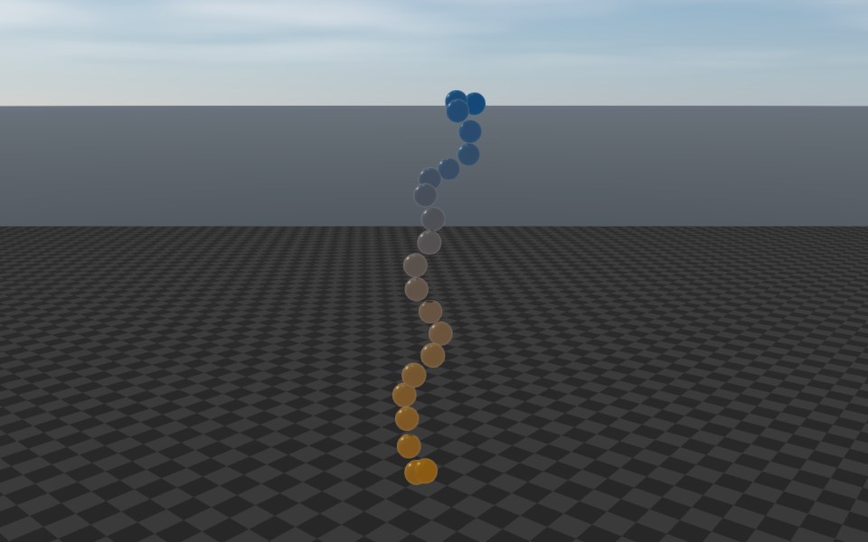 |
ANYmal standing 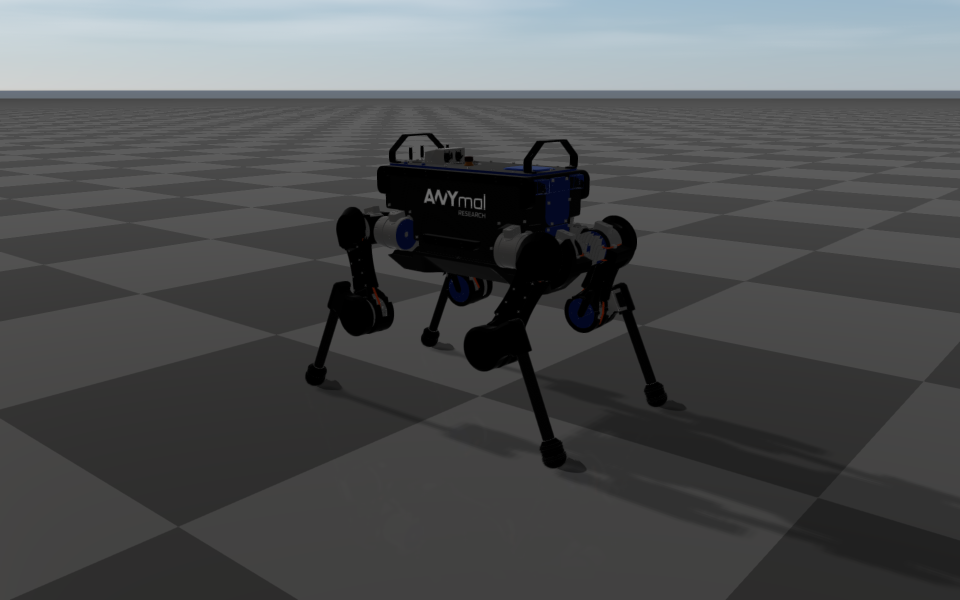 |
ANYmal falling 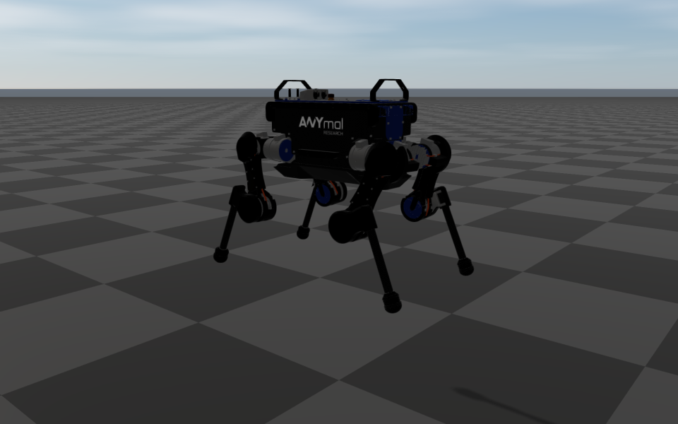 |
ANYmal on terrain 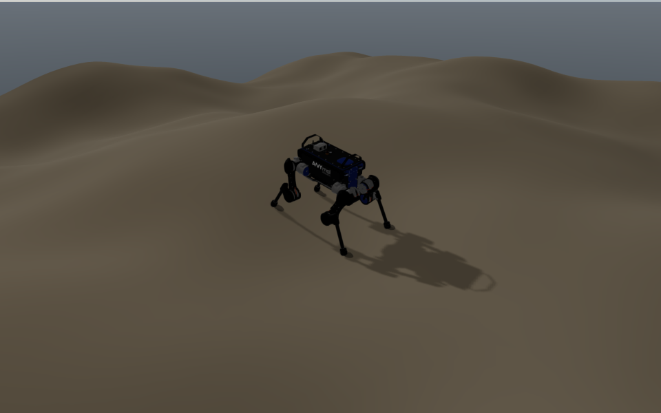 |
Rigid primitives 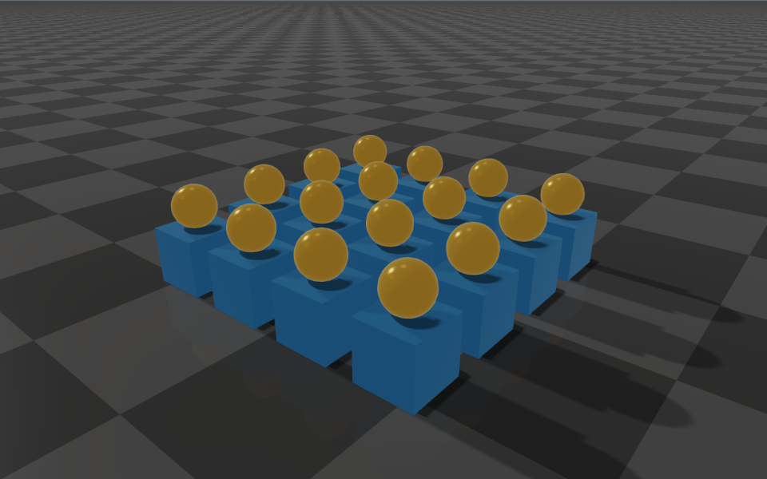 |
Strandbeest 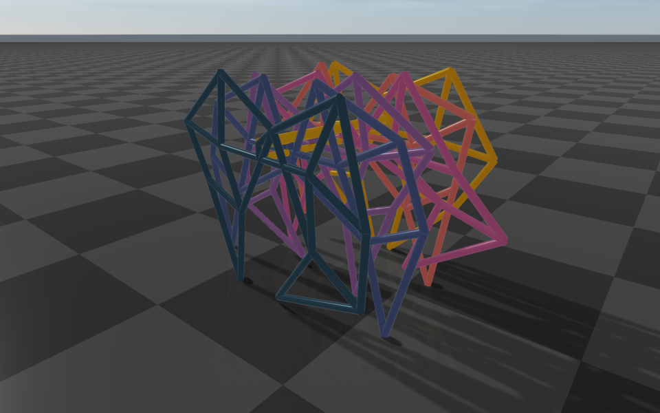 |
Heightmap LiDAR 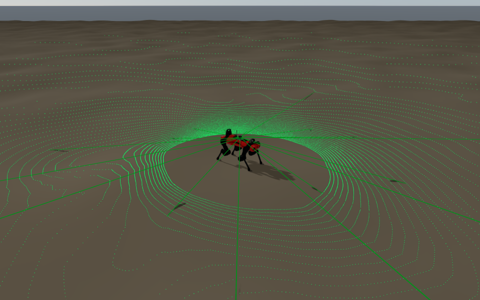 |
Primitive ray scaling 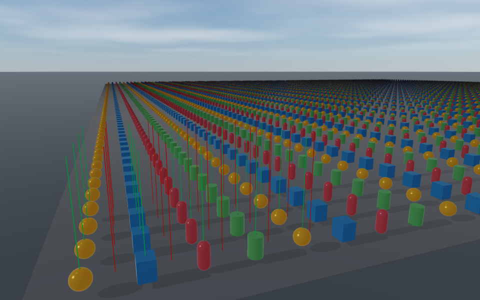 |
Deformable cloth 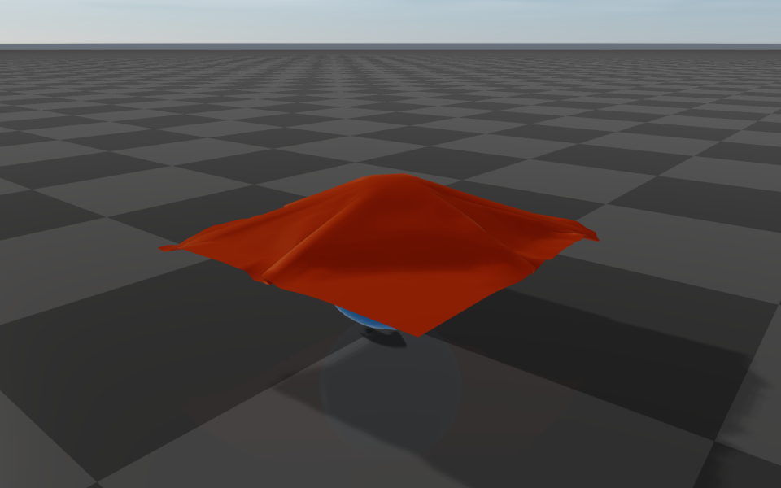 |
Deformable cube stack 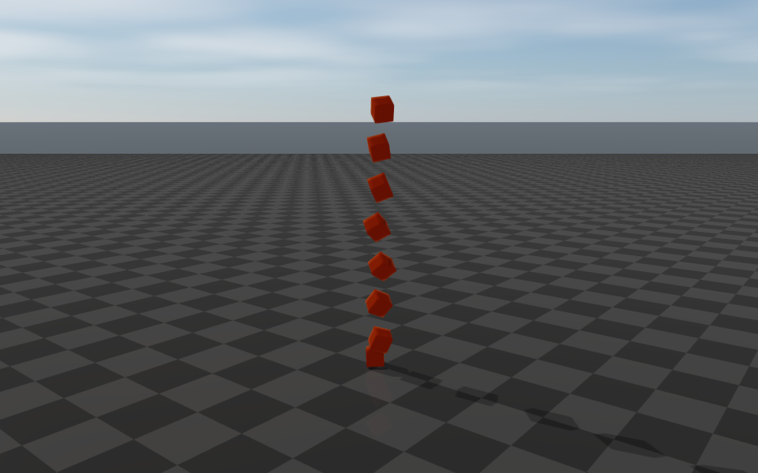 |


Images show the RaiSim setups. The chain, falling robot, and primitive ray field have a floor only for visual reference. Green LiDAR points are recorded terrain hits; colored ray segments illustrate hits and misses without changing the benchmark’s collision geometry.